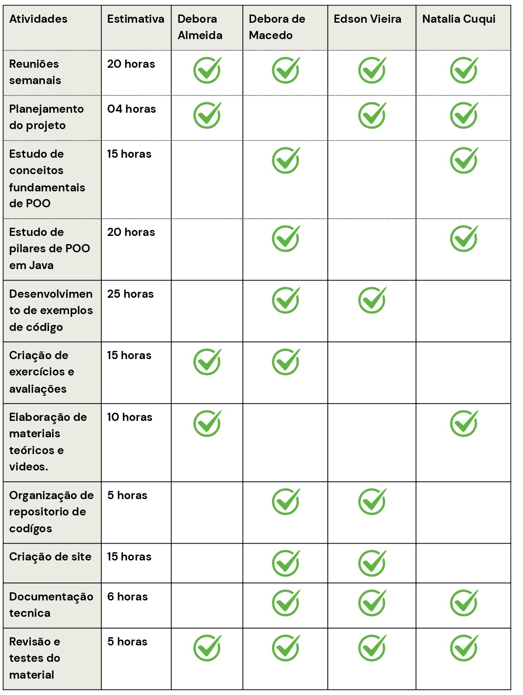
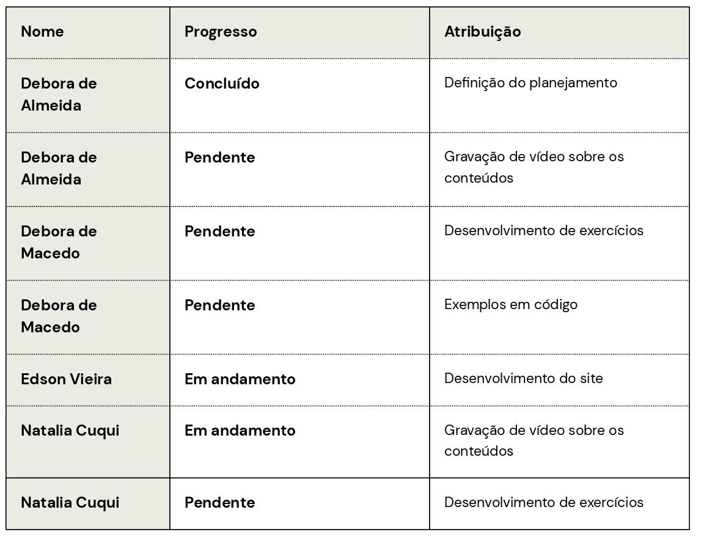
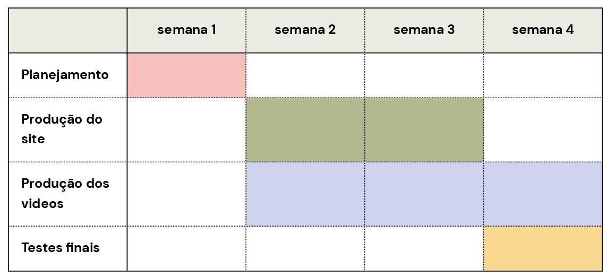

Projeto da Disciplina Certificadora de Competência Comum
Objetivo Geral:
Desenvolver Recursos Educacionais Abertos (REA) voltados para a disciplina de Programação Orientada a Objetos (POO) , proporcionando um aprendizado acessível, dinâmico e envolvente, tornando conceitos complexos mais claros e intuitivos.
Conteudos Abordados:
- Classes, Objetos
- Atributos, Metodos
- Abstração
- Encapsulamentos
- Herança
- Polimorfismo
Objetivos Especificos:
- Produzir Conteúdos Didáticos: Criar apresentações de slides e vídeo-aulas que expliquem os topicos relacionados a programação orientada a objetos.
- Criar um repositorio de codigo fonte: O repositorio devera conter exemplos de codigo em java, para que o aluno possa desenvolver aprendizado atraves de exemplos práticos.
- Criação de uma pagina web: Criar uma pagina web interativa, para organizar o conteudo didatico, aulas, slides, link para os codigos de exemplo etc
- Promover o Aprendizado Lúdico: Buscar maneiras de incluir o aprendizado ludico no projeto, seja atraves de linguagem, figuras, memes, interatividade, a ser definido melhor durante o desenvolvimento do projeto
- Aplicar conhecimentos: Apicar os conhecimentos vistos no curso de Analise e Desenvolvimento de Sistemas para o desenvolvimento do projeto.
Planejamento de Horas:
Carga horaria total para cada integrante: 120 horas.

Tarefas Individuais e Progresso:

Metodologia:
Será utilizada uma metodologia ágil, adaptada às necessidades do projeto
- Sprints: O trabalho será dividido em ciclos de desenvolvimento (sprints) com metas e entregas definidas.
- Reuniões: Reuniões semanais serão realizadas para acompanhamento do progresso, discussão de dificuldades e planejamento das próximas etapas.
- Ferramentas de Gerenciamento: Utilização de ferramentas como Trello para organizar as tarefas, definir responsáveis e acompanhar o andamento do projeto.
Linha do tempo:

EStrutura do Material/ Website:
- Página Inicial:
- Apresentação do projeto e dos objetivos.
- Informações sobre os autores.
- Conteúdo:
- Módulos ou seções organizadas por tópicos de POO.
- Para cada tópico:
- Material teórico (texto, slides, vídeos).
- Exemplos de código Java.
- Exercícios e soluções.
- Contato:
- Informações para contato com os autores.
- Mais recursos
Padrões de Projeto e Boas Práticas:
- Padrões de Commit: Definir um padrão para as mensagens de commit no sistema de controle de versão (Git), para manter o histórico organizado e claro.
- Convenções de Código Java: Seguir as convenções de código Java para garantir a legibilidade e a manutenção do código.
- Documentação: Documentar o código e o projeto de forma clara e completa.